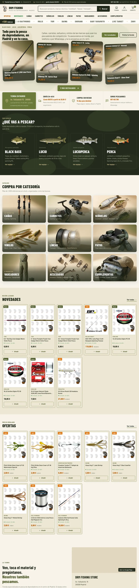
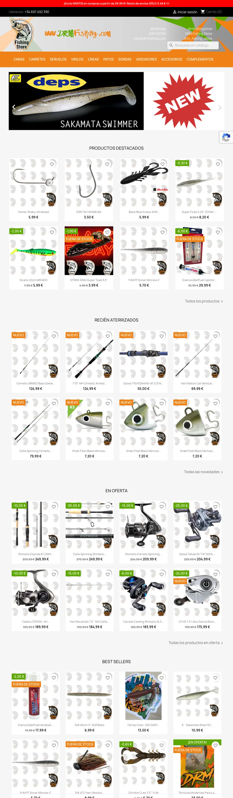

Paris
Là où tout a commencé
- NaissanceParis
- Langue maternelleFrançais
Les premières années, avant le départ pour l'Espagne.
Management hôtelierIA & création d'outils et web
Madrid, Espagne
Français · English · Español
J'étudie le management hôtelier à Vatel, à Madrid. Je sors de six mois au Jumeirah Mallorca, un resort cinq étoiles, entre housekeeping et conciergerie.
Les villes où j'ai vécu
Scrollez pour faire le voyage ↓
Là où tout a commencé
Les premières années, avant le départ pour l'Espagne.
Grandir à Madrid
Huit ans au Lycée Français, l'espagnol au quotidien, le théâtre et le rugby, puis Vatel.
Voir en détailLe cinq étoiles
Six mois sur l'île, dans un resort de luxe, d'avril à septembre.
Voir en détailLe retour
De retour à Madrid, avec une saison en cinq étoiles dans les bagages.
Voir en détailExpériences
Avr. — sept. 2026 · Majorque
Au Jumeirah Mallorca, j'ai soutenu l'équipe housekeeping et accueilli les clients à la conciergerie, pour une expérience personnalisée dans leur langue.
Jumeirah Mallorca · Resort de luxe
Stage · juin 2022 · Loewe Madrid
Chez Loewe à Madrid, maison du groupe LVMH, j'ai découvert l'univers du luxe de l'intérieur.
En chiffres
0123456789
Au Jumeirah Mallorca, entre housekeeping et conciergerie, d'avril à septembre 2026.
0123456789
Français natif, anglais et espagnol C1 : je reçois chaque client dans sa langue.
0123456789
Le théâtre m'a donné l'aisance à l'oral et le goût de bien recevoir un public.
IA & digital
J'utilise l'IA tous les jours, surtout pour construire : des outils qui règlent de vrais problèmes, des sites, des applications. Ce portfolio en fait partie.
Transforme cette facture en fiches produits PrestaShop
Projet perso · Marchés financiers
Il surveille le Nasdaq en continu depuis un serveur, analyse le marché et l'actualité, et m'envoie des alertes sur iPhone. Il propose des idées de trade, mais ne passe jamais d'ordre tout seul.
Site web · Vatel Madrid
Pour César Mateu, en management hôtelier à Vatel avec moi : son parcours en carte animée, ses expériences, son CV en PDF, en trois langues. Il a servi de base à ce site-ci.
Voir son siteOutil IA · DRM Fishing Store, Madrid
012345678901234567890123456789hheures de travail économisées, soit environ 6 semaines
Web design · SEO local
L'ancienne boutique PrestaShop était peu pratique sur mobile, avec des photos noyées dans la page et une navigation difficile. Je l'ai refaite de zéro : recherche par marque ou par technique, rayons par poisson, plus de 130 marques mises en avant. La refonte est proposée au gérant.
Voir le nouveau site

Maintenez le clic sur l'écran et faites glisser pour comparer vous-même.
Vatel Madrid — Hôtellerie
Bachelor en management hôtelier · 2e année
Hotel & Tourism Business School, sur le campus de Madrid. La théorie pendant l'année, le terrain à chaque stage.
Baccalauréat français, mention Assez Bien
Spécialités anglais — monde contemporain (LLCER AMC) et sciences économiques et sociales (SES).
Mention Assez Bien — Lycée Français de Madrid
Le premier diplôme, obtenu au Lycée Français de Madrid.
En dehors
Quatre ans de théâtre sur scène, six ans de rugby, trois de basket. La pêche sportive depuis toujours, la musique et les voyages.
Langues
Compétences